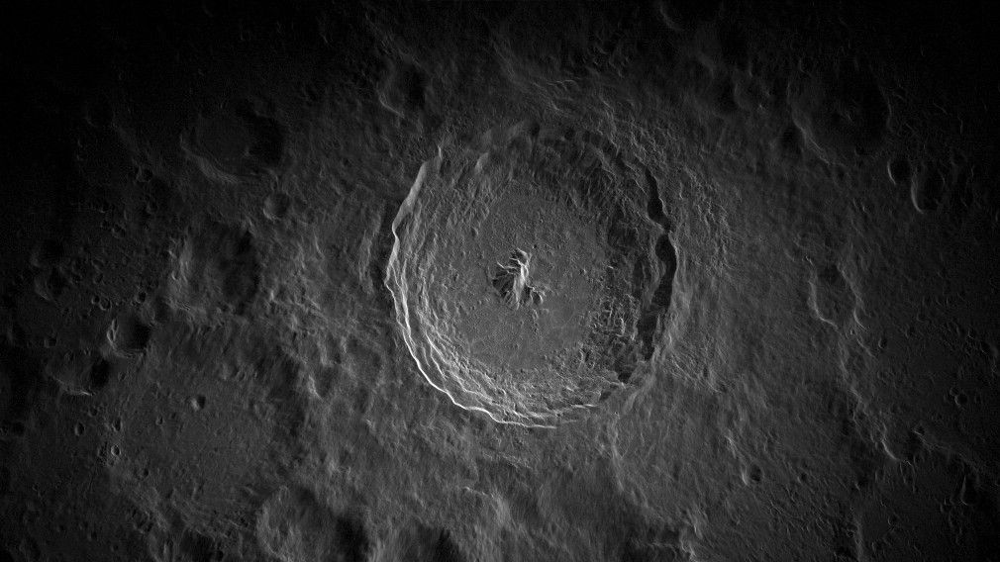
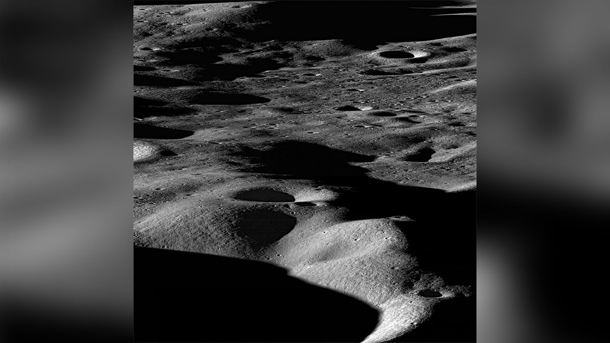
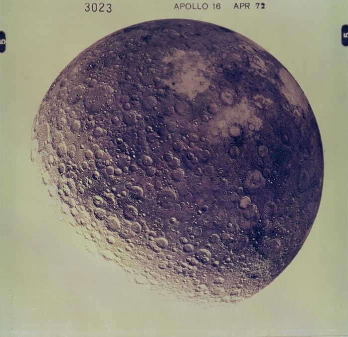

Earth's Moon
Earth's Moon: Structure and Surface
- Earth's moon is a natural satellite and is not a planet.
- The moon's surface is covered with craters, mountains, and plains.
- It lacks a significant atmosphere, which means there is no wind or weather on the moon.
Time on Earth's Moon
- A day on the moon, known as a lunar day, lasts about 29.5 Earth days.
- The moon orbits Earth, and a lunar year is roughly the same as an Earth year.
Earth's Moon's Neighbors
- Earth's moon does not have any moons of its own.
- It orbits Earth, which is its neighboring planet.
Quick History of Earth's Moon
- The moon has been observed and studied by humans for centuries, dating back to ancient civilizations.
- The Apollo program, initiated by NASA, successfully landed humans on the moon in 1969 with the famous Apollo 11 mission led by astronauts Neil Armstrong and Buzz Aldrin.
What does Moon look like?

A close-up of the Tycho Crater, a large impact crater located on the south end of the moon. Captured with the Green Bank Telescope in West Virginia, this is one of the highest-resolution images of the lunar surface ever taken from Earth.

Mountains on the moon as seen by NASA's Lunar Reconnaissance Orbiter in 2009. On the moon, mountains are created by asteroid impacts into the lunar surface.

The back side of the moon taken by the Apollo 16 mission crew in 1972. Apollo 16 was the fifth and penultimate mission to land humans on the moon.